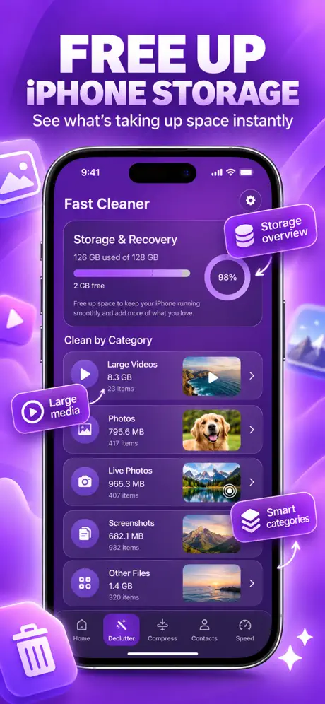

Can Fast Cleaner fix an iPhone storage-full warning?
Fast Cleaner can help you review unwanted local media when photos and videos are taking up space. It cannot increase the phone’s built-in capacity or repair every cause of a storage warning. Identify the large category before choosing a cleanup action.
A storage warning is a reason to inspect your phone’s actual usage before removing files. Start by identifying which capacity is full and which category is responsible. Then follow the relevant cleanup steps.
Start here
Open Settings → General → iPhone Storage. Check iCloud separately under Settings → your name → iCloud. Apple explains why these are different capacities.
Follow the category that is actually large
- Let the iPhone Storage calculation finish and note the available space.
- Open the largest apps and inspect what can be managed.
- Check storage recommendations and read what each action removes.
- Choose the matching branch below, make a small change, and measure again.
Apple’s storage guide describes categories and controls. The proportion occupied by Photos, Messages, or apps varies; no category is automatically the best place to start.
If Photos is the main category
Review large unwanted recordings, duplicates, and screenshots. Preserve separate copies of important media and check how your sync service handles deletion. Use the duplicate-merging guide or video export guide for those specific tasks.
If you already removed photos, use our after-deletion guide. Inspect Recently Deleted before permanent removal. Apple documents synced deletion and recovery exceptions, so do not assume every removal has a guaranteed fallback.
If Apps or Documents & Data is large
Look for downloads and cleanup controls inside the app. Documents & Data may contain files, drafts, and other content you value. Size alone does not establish that it is cache.
Check preservation before app removal
Offloading retains documents and data; deleting an app removes related data. Confirm exports, account access, and sync before deletion. Do not assume reinstalling will recover everything.
For the actual cleanup choices, follow offloading and app-data review. A photo cleaner cannot inspect every other app’s private files.
If Messages or downloaded media is large
Review attachments and offline content in the relevant app. Save anything important, then choose an action whose effect you understand. Removing a download can differ from deleting an item from a synced library.
Messages in iCloud can keep messages and attachments synchronized. Check its settings before deleting conversations; cloud storage and local capacity still need to be assessed separately.
If System Data is large or the numbers seem inconsistent
System categories include operating-system resources, logs, indexes, and temporary data. Apple explains that the system manages some temporary files automatically. A storage category is not a list of files that a cleaner can safely delete.
Review ordinary recommendations, allow an active calculation to finish, and note any current sync or update activity. If the reading remains unexplained, record the figures and contact Apple support. There is no universal System Data size that proves you should erase the phone.
If support recommends restoring the device, first verify the backup, account credentials, and app-specific recovery requirements. A reset is a consequential troubleshooting step, not a routine cleanup method or a guaranteed reduction.
If the warning is about iCloud
Inspect the cloud account’s usage rather than repeatedly deleting device downloads. Follow Apple’s iCloud storage-management instructions. Deleting a cloud backup does not directly add space inside the phone, and removing local copies may leave cloud usage unchanged.
Choose the next action
Use our ten-method cleanup plan once you know which category matters. Recheck the same screen after a small batch and retry the blocked recording, download, or update.
Storage cleanup can address a capacity problem. Persistent slowness may have other causes; Apple’s performance troubleshooting guide covers checks beyond storage. For content you need to keep, compare archiving and capacity options before replacing the phone.
Frequently Asked Questions
Why is my iPhone storage full?
The cause depends on your device. Check Settings → General → iPhone Storage and inspect the largest categories and apps. A photo count or another person’s storage breakdown does not diagnose your phone.
Does large Documents & Data mean disposable cache?
No. It can include useful app files, downloads, drafts, and other data. Check inside the app and preserve what matters before removing it.
Can iCloud help with Messages?
Messages in iCloud can store and synchronize messages and attachments. It uses cloud capacity, and deletions can sync too. It does not increase the phone’s physical storage.
Should I empty Recently Deleted immediately?
Only after reviewing the files and preserving important copies. Permanent deletion removes the recovery option and is not a step to take automatically.
When should I contact Apple support?
Ask for help when storage remains inconsistent or a task still fails after you review the relevant categories. Record available space, software version, and the exact warning. Do not use an arbitrary System Data threshold as an instruction to erase the phone.
Want help reviewing your media?
Explore Fast Cleaner’s duplicate, similar-photo, and video tools. Check platform features and pricing before installing.
Fast Cleaner publishes this guide. Our privacy policy describes on-device media analysis and separate limited analytics. Product descriptions are developer statements; storage results depend on your files and choices.
Match the warning to the capacity
| Warning or category | What to check | Suitable next step |
|---|---|---|
| Device storage full | Settings → General → iPhone Storage. | Review the biggest removable category. |
| iCloud storage full | Settings → your name → iCloud. | Manage cloud usage or review an appropriate plan. |
| Photos and videos dominate | Inspect sizes and important copies. | Compare manual review with Fast Cleaner’s grouping. |
Apple’s wording:
set amount of storage.
Apple describes the capacity supplied with a device in these terms. More cloud space does not add physical storage chips to the phone.
Platform source: Apple — Device storage versus iCloud storage, checked November 21, 2026.
Where Fast Cleaner fits
If the issue is unwanted camera-library media, use Fast Cleaner to inspect likely cleanup candidates. If the issue is a large app database or a cloud backup, work in the appropriate app or cloud settings instead.
Fast Cleaner’s privacy policy describes on-device media analysis with separate limited analytics. Compare Android and iPhone pricing.

Continue with Where does Fast Cleaner fit in an iPhone storage cleanup?.
Reviewed November 21, 2026. Follow the linked Apple guidance for your software version. Menus and available features vary by device. Examples are illustrative, and no fixed cleanup result is promised.